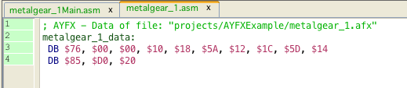

add a file to the project
AYFX file conversion and play code is generated in vedi, using the popup on the project file tree. By chosing the entry "build vectrex ayfx" the dialog is displayed (see also the vedi→AYFX-Conversion documentation).
The popup menu is only activated while a ayfx file is selected in the current project. You have to download (or create) files befor you can convert them (in the configuration section under edit you can download a few hundred [wait a little for the download to finish]).
If you have a file available, you can easily add the file to your project. Place the mousecursor over the project name and press the right mouse button.
add a file to the project
Chose "add file"... and navigate in the resulting file choser to the file of your desire.

add a ayfx file
By chosing a file - the file is copied to the project directory and is NOW available.

build vectrex ayfx
Selecting "build vectrex ayfx" converts the ayfx files directly (no dialog, although you can edit ayfx files, for this you must use the ym-dialog):
The sources will be created in the current project directory.
(The name of the generated sources are derived from the chosen file. In the following it is assumed that the name given is "metalgear 1.afx".)
The generated sources are accompanied by an example ayfx player routine.
Following sources are generated:
ayfxPlayer.i
the subroutines to play ym-data
VECTREX.I
which is needed by the source
metalgear 1.asm
a file with the actual data
metalgear 1Main.asm
a "main" file, with an example vectrex runnable "cartridge" file
A vectrex playable binary file can be generated by setting the generate "metalgear 1Main.asm" file as the main file in the project.
Notice:
When generating from a "C" project - the generated data is "C"-data!

ayfx
The actual play routines are documented in the source code, for the format of ayfx files look at the documentation of the AYFX editor (downloadable at: https://shiru.untergrund.net/software.shtml). You can also use the ym-conversion dialog in vedi to edit/create/extract ayfx files.
Just a few bullet points...
the AYFX routines were written by Richard Chadd, I have not modified them, they were released as a facebook posting for other vectrex interested people
for initialization following variables should be cleared: sfx_pointer (16 bit) and sfx_status (8 bit).
for playing a sound effect the address of the effect must be put into the sfx_pointer variable and a "1" into the sfx_status variable
in the main loop a subroutine sfx_doframe must be called, as long as the status is not 0
the provided example does only play one ayfx at a time and this hardcoded in channel 3 of the PSG chip
to use the other two sound registers, the routine has to be expanded

example main

ayfx data

ayfx example